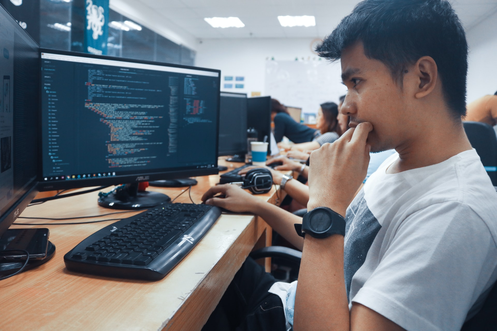

The Department of Accounting in the School of Business at Independent University, Bangladesh is committed to providing excellence in accounting education to embrace the challenge of pursuing different professional qualifications as well as higher academic qualifications at home and abroad.
We have built meaningful relationships with the Industry and Professional community. Our students receive waivers for multiple courses at the CA Program and the CMA Program.
SCHOOL:
School of Business and Entrepreneurship.
DEPARTMENT:
Accounting
CSE

The Department of Computer Science & Engineering (CSE) at IUB, under the School of Engineering, Technology & Sciences (SETS), is the largest, most dynamic and versatile department in the university. Our “Application Oriented Learning” philosophy not only teaches students the fundamental principles of computing but also provides them with hands-on training of the various applications of this knowledge.